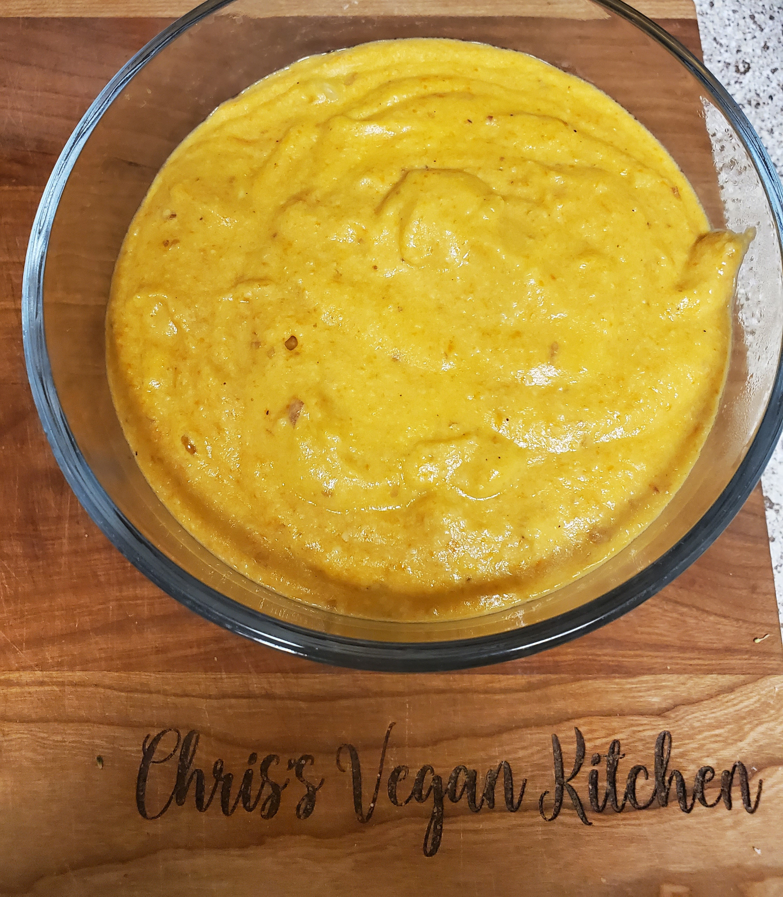

Vegan Cheese Recipe
Estimated time: 35 minutes
This is a versatile creamy vegan cheese recipe. It is best used
for a dipping sauce or the cheese in a vegan mac and cheese. It is
a majority potato and carrot based that yields an earthy and smooth
taste. This was that first cheese recipe I learned how to make all
the way back in 2014!
Ingredients
- 2 cups diced potato
- 1 cup diced carrots
- 1/2 cup plant milk (I opt usually for soy)
- 1/2 cup nutritional yeast
- 1/3 cup olive oil
- 1 tbsp lemon juice
- 1 tsp salt
- 1/2 tsp black pepper
- 1/2 tsp garlic powder
- 1/2 tsp onion powder
Instructions
- Bring 4 quarts of water to a boil and add diced potato and carrots
allowing them to boil for 30mins
- Drain potato and carrots and add them to a blender or food processor
- Add all remaining ingredients and blend until smooth
- Add cheese mixture to already cooked pasta or serve as a dip with tortilla chips